1.1引言:滨海湾金沙的大胆构想
两座塔楼
互相倚靠会怎样？
如果给一栋200米高楼加一栋一样高的塔楼,让它们向内倾斜互相倚靠,再横放一栋340米长的楼架在顶部保持平衡——这正是滨海湾金沙的真实结构。
而是像这样让它们向内倾斜
1.1引言:滨海湾金沙的大胆构想
如果给一栋200米高楼加一栋一样高的塔楼,让它们向内倾斜互相倚靠,再横放一栋340米长的楼架在顶部保持平衡——这正是滨海湾金沙的真实结构。
而是像这样让它们向内倾斜
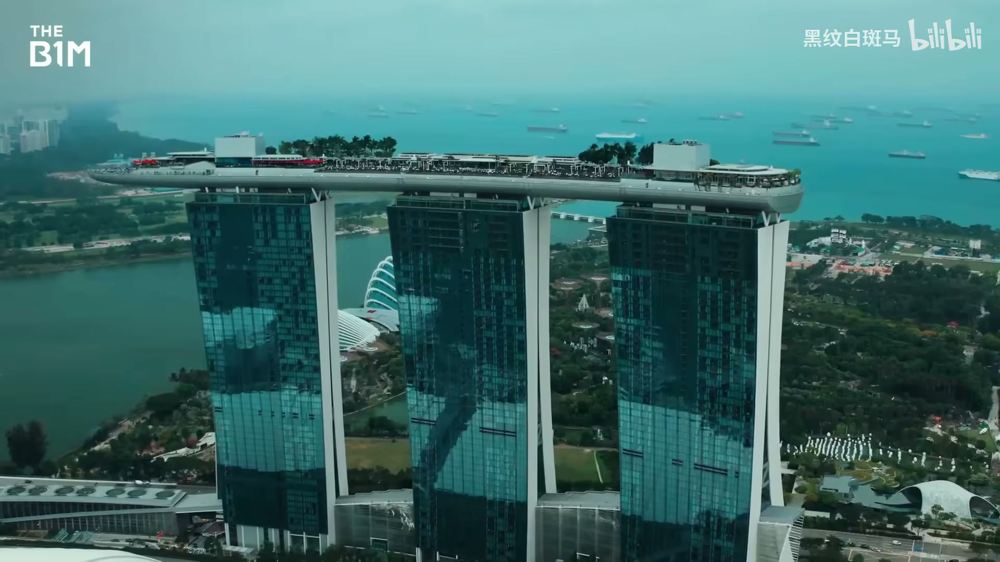
1.2引言:滨海湾金沙的大胆构想
滨海湾金沙已是新加坡的标志性象征,是稳稳站立的工程奇迹,但它带来的颠覆性影响尚未被充分认可,而且扩建仍未完成。
完全称得上是工程奇迹
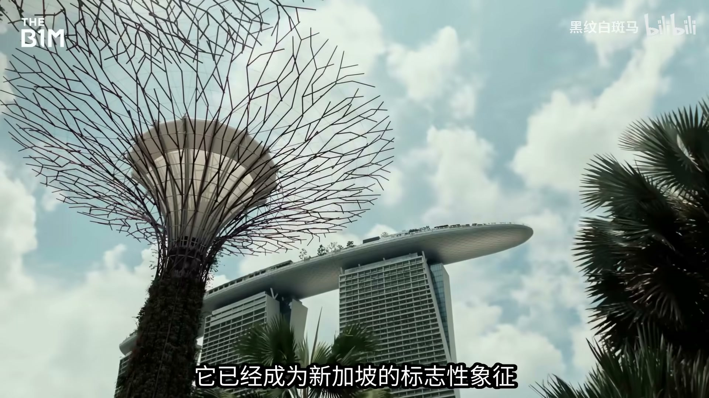
1.3引言:滨海湾金沙的大胆构想
21世纪初新加坡已是金融中心,但要与香港、迪拜、拉斯维加斯竞争还需要地标景点;政府提出滨海湾改造计划,2006年拉斯维加斯金沙集团中标,由建筑师摩西·萨夫迪设计出三栋塔楼呼应赌场洗牌扑克牌形态的方案。
正在洗牌的扑克牌的形态
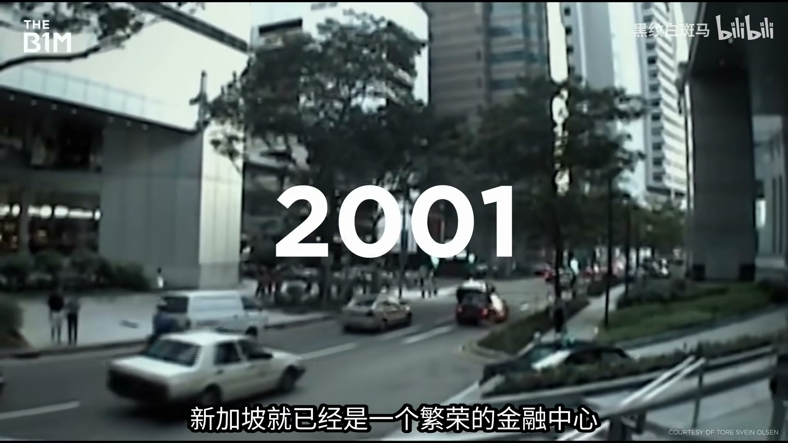
2.1塔楼工程挑战与施工
从设计之初,工程师们就在担心这个方案能否真正稳稳立住——萨夫迪向来偏爱那些看起来根本不可能建成的建筑,蒙特利尔栖息地67等过往作品延续了同样的结构逻辑。
那些看起来根本不可能建成的建筑对吧
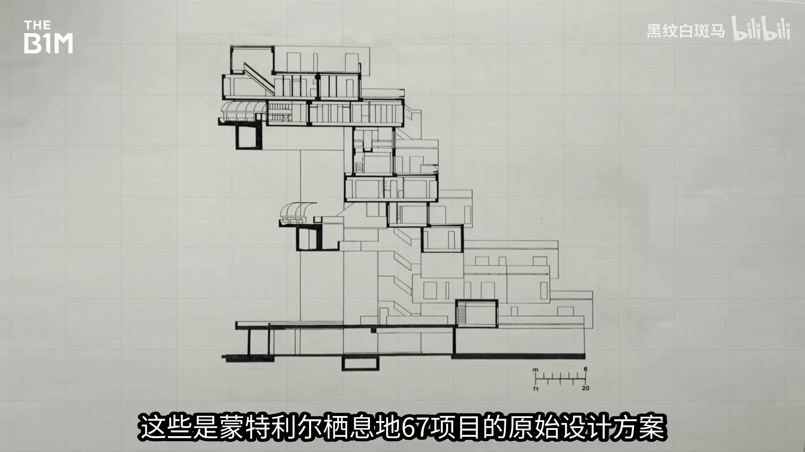
2.2塔楼工程挑战与施工
滨海湾金沙所在的地块是20世纪70至90年代填海造出的陆地,稳定性极差;为解决地基问题,工程师打入5000根最大埋深50米的桩基,把荷载传递到更坚实的岩土层。
工程师需要打入5000根桩机
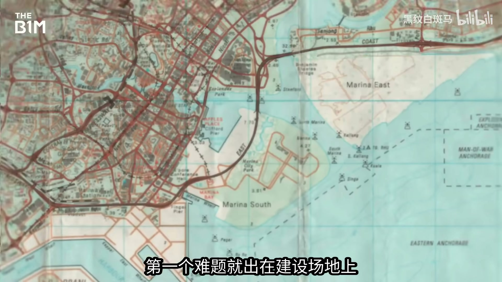
2.3塔楼工程挑战与施工
三座塔楼向内最大倾斜26度,定位偏差会导致顶部空中花园无法对接,测量团队用激光与GPS将施工精度控制在毫米级;配合剪力墙与预应力平板结构,三座200米高的55层塔楼于2009年全部封顶。
将所有施工精度控制在毫米级误差范围内
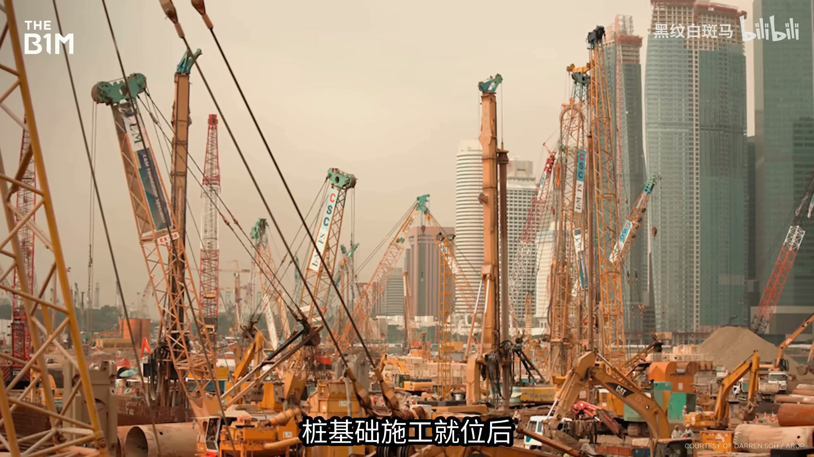
3.1空中花园建造工程
空中花园分14个阶段建造,每段重达数百吨,先异地预制、驳船运抵现场,再由钢绞线千斤顶吊装焊接就位——这是有史以来难度最高的吊装作业之一,施工须避开大风天气,误差控制在毫米级。
工程师们将它分成14个阶段
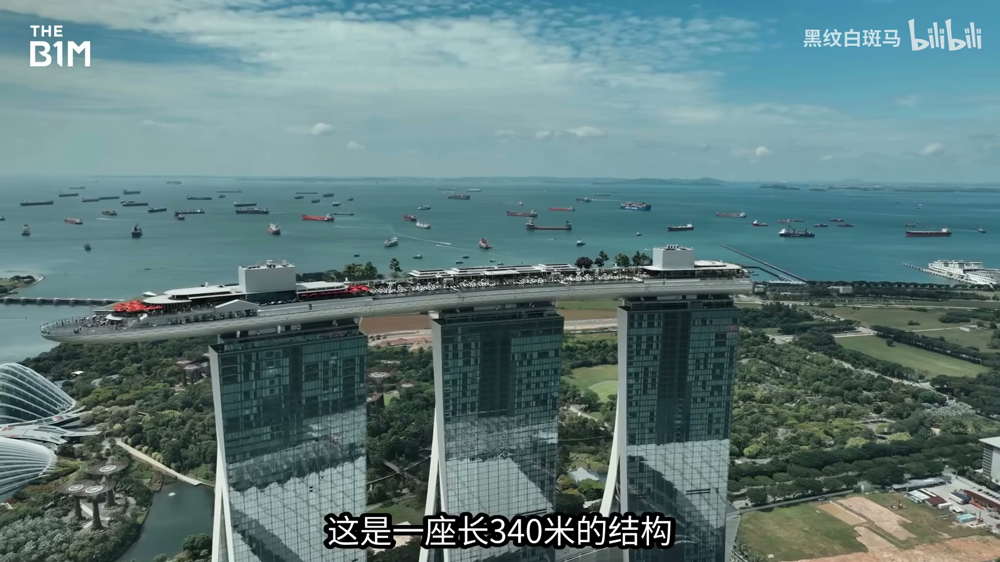
3.2空中花园建造工程
悬空于城市上空的悬臂段是整个结构中最大胆的部分,内部横架系统把重量分散传回塔楼;箱型梁、长钢横架与V型支撑将受力均匀分散,至今仍是世界上最大的公共悬臂平台。
它仍然是世界上最大的公共悬臂平台
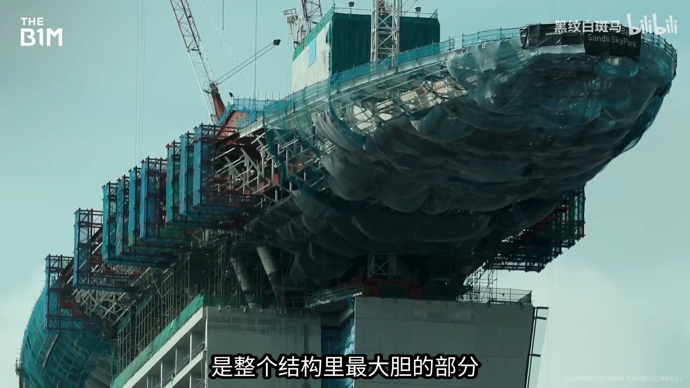
3.3空中花园建造工程
三座塔楼会因热胀冷缩及风荷载持续发生细微位移,空中花园每天最多可位移20毫米;为此塔楼之间设置伸缩缝,并靠这套柔性设计避免结构被拉裂。
空中花园每天最多可以位移20mm
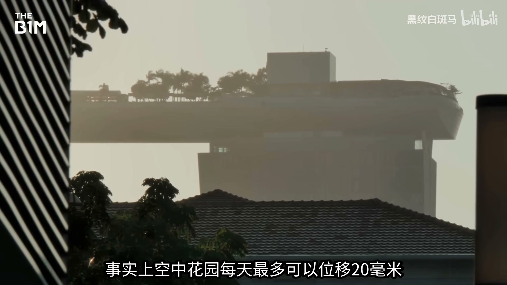
4.1标志性无边泳池建造
无边泳池长150米,是世界上最大的屋顶泳池;结构分三段分别对应下方塔楼,靠伸缩缝适应位移与沉降,隐藏的水箱和水泵持续平衡水位,打造出无缝衔接的视觉效果。
是世界上最大的屋顶泳池
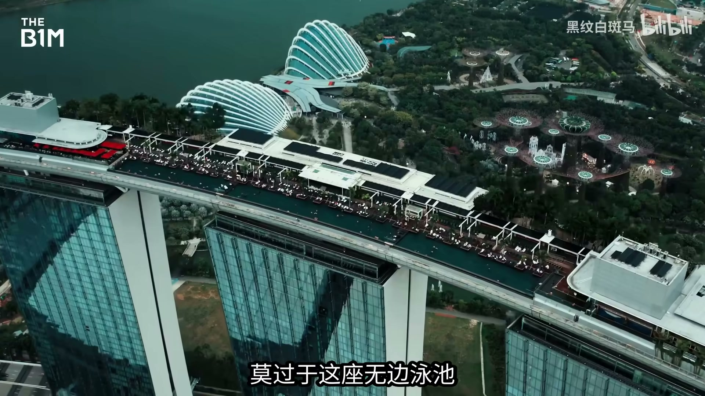
5.1项目价值与城市影响
抛开建筑魔法不谈,滨海湾金沙其实是一个体量极其庞大的酒店项目:总建筑面积84.5万平方米,拥有2500间客房、全球最大的中庭赌场、商场、剧院与博物馆,协调这些功能本身就是巨大的设计挑战。
总建筑面积达84.5万平方米
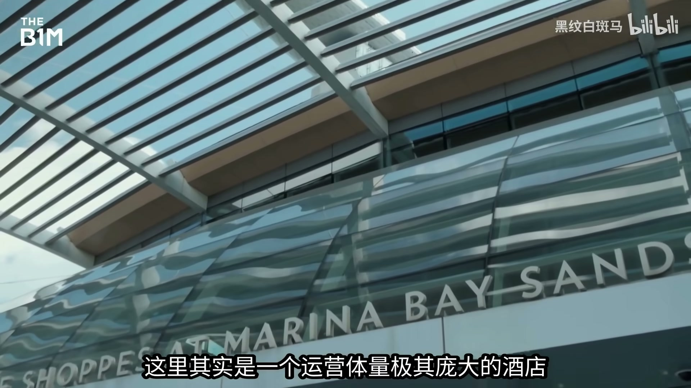
5.2项目价值与城市影响
到2010年4月开业时,滨海湾金沙总造价已达55亿美元,是有史以来造价最高的独立赌场度假村之一;2008年全球金融危机中途爆发,外界一度怀疑工程能否建完,但新加坡与金沙集团坚持推进。
全球金融危机在施工中途爆发
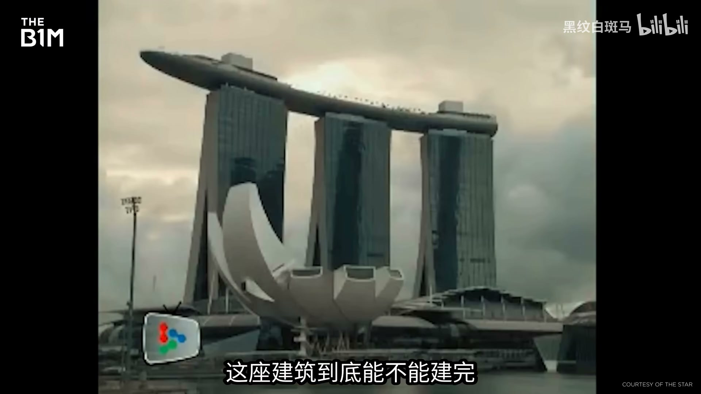
5.3项目价值与城市影响
事实证明这个决定是对的:短短几年内滨海湾金沙就成为全球盈利能力最强的赌场之一,会议中心承办全球性活动,空中花园也是亚洲游客到访量最高的景点之一,并为新加坡带来堪比埃菲尔铁塔的城市地标形象。
就成为全球盈利能力最强的赌场之一
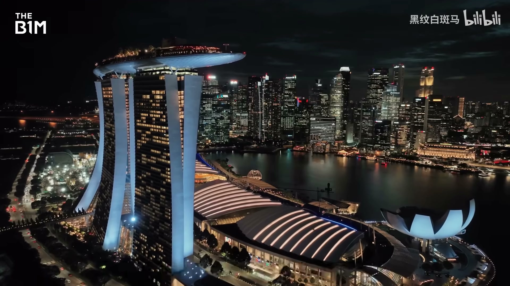
6.1第四塔楼扩建规划
第四座塔楼共55层,楼体前倾并整体扭转45度,同样设有横跨两层的空中花园,还包含观景台、餐厅、屋顶花园、私人度假小屋等设施,塔楼下方是可容纳1.5万人、由拉斯维加斯Sphere团队设计的娱乐场馆。
整体扭转45度
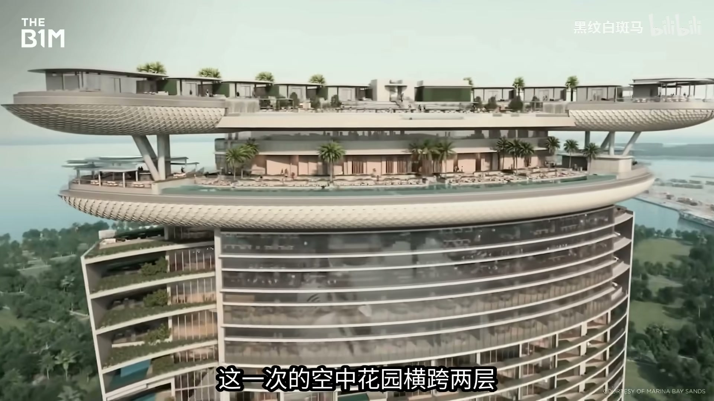
6.2第四塔楼扩建规划
第四塔楼项目最初估算造价33亿美元,如今已攀升至约80亿美元,足见工程的复杂程度与雄心规模;这是萨夫迪对自己杰作的续写,能否成功,只有时间能给出答案。
如今已攀升至约80亿美元
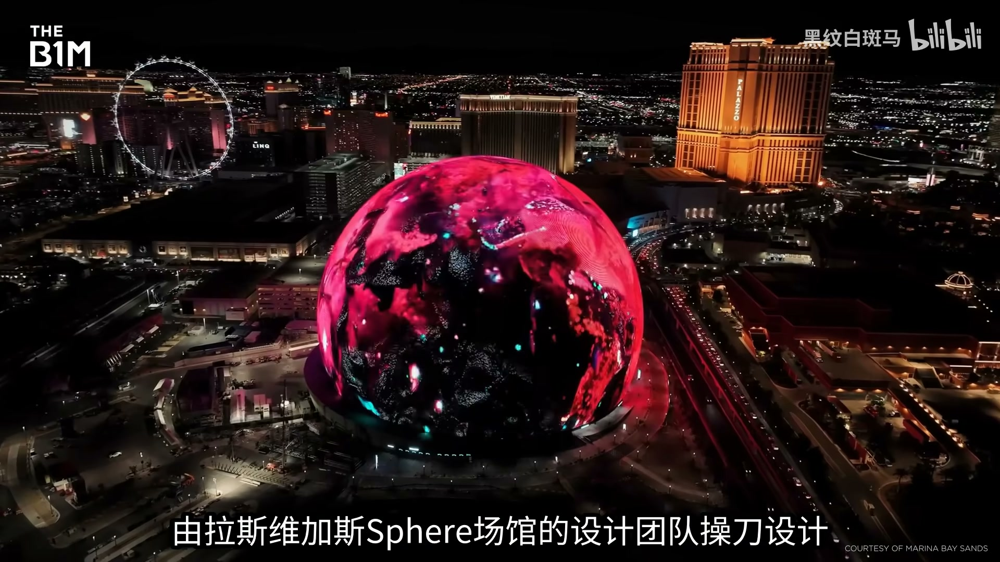